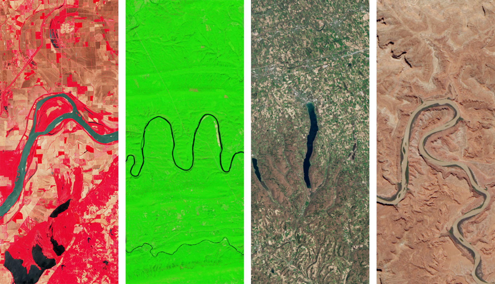
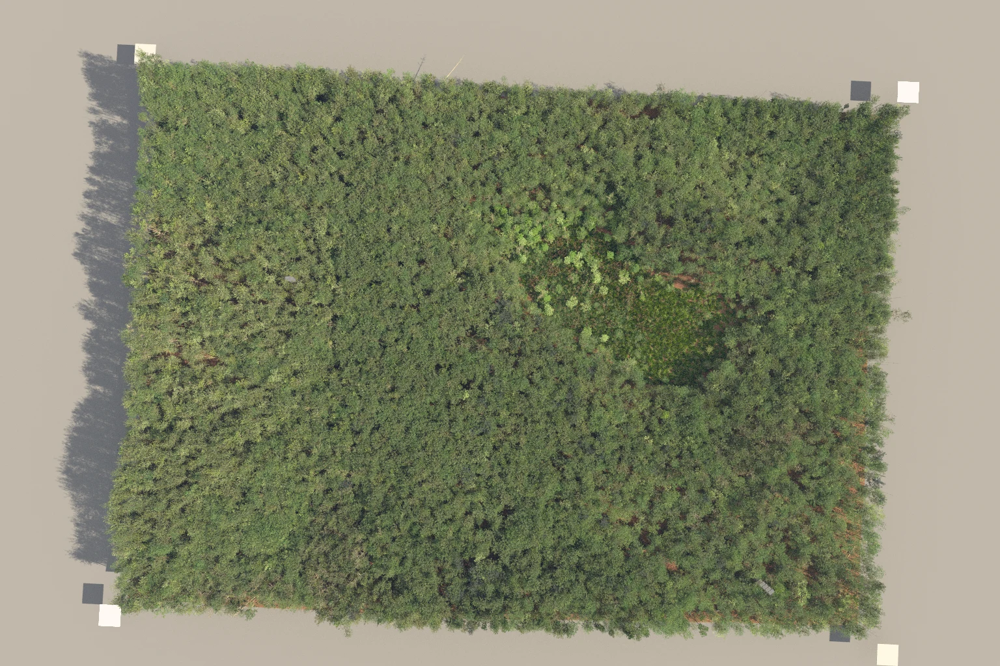
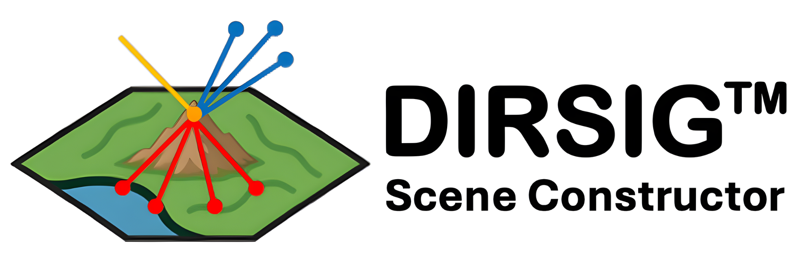
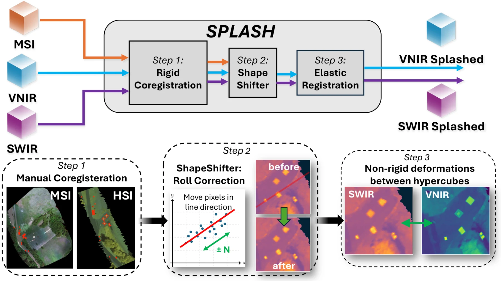
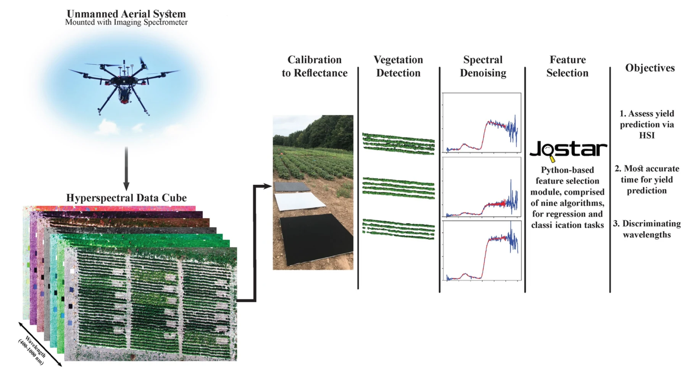

Temporal Hyperspectral Representation Learning for Biotechnology
Self-supervised temporal hyperspectral representation learning for biotechnology.
Earth observation & applied AI
Understanding our world through remote sensing, machine learning, and physical simulation.
Research Assistant Professor
Rochester Institute of Technology

Research & software
From learning representations of Earth to simulating the sensors that observe it.

Self-supervised temporal hyperspectral representation learning for biotechnology.

Automated scene construction for Landsat-scale simulations and sensor trade studies.

Estimating atmospheric water vapor and propagating uncertainty in Landsat split-window surface-temperature products.

Aligning VNIR and SWIR pushbroom imagery from separate drones through global, row-wise, and elastic correction.
Estimating mixed material percentages inside forest voxels from 3D position and LiDAR intensity.

Connecting greenhouse spectroscopy with drone-based field observations for yield prediction and crop maturity assessment.
Nine feature-selection algorithms for regression and classification, with a familiar Scikit-Learn-style interface.
Papers & collaboration
IEEE Transactions on Geoscience and Remote Sensing
Remote Sensing of Environment · In review · Preprint
Computers and Electronics in Agriculture · 230, 109923
Remote Sensing · 15(3), 794
IEEE Journal of Selected Topics in Applied Earth Observations and Remote Sensing · 15, 4027–4044
Ph.D. dissertation · Rochester Institute of Technology
IEEE Transactions on Geoscience and Remote Sensing · 60, 1–17
Remote Sensing · 13(19), 3975
Remote Sensing · 12(22), 3809
Journal of Applied Remote Sensing · 14(2), 024519
Amir Hassanzadeh is a Research Assistant Professor at Rochester Institute of Technology, working at the intersection of remote sensing, machine learning, and physics-based simulation. His work develops methods and software for extracting meaningful information from satellite, drone, hyperspectral, thermal, and LiDAR observations.
Research spans self-supervised geospatial foundation models, Landsat surface-temperature retrieval and uncertainty, large-scale DIRSIG scene construction, and agricultural monitoring. A Ph.D. in Imaging Science from RIT, earned in 2022, connected greenhouse spectroscopy with drone-based crop-yield and harvest-maturity assessment.
Teaching includes Applications of Machine Learning in Remote Sensing, along with graduate and undergraduate research advising. Earlier industry experience at AgerPoint and PrecisionHawk informs a focus on practical, usable research software.
Research, collaboration, and opportunities.